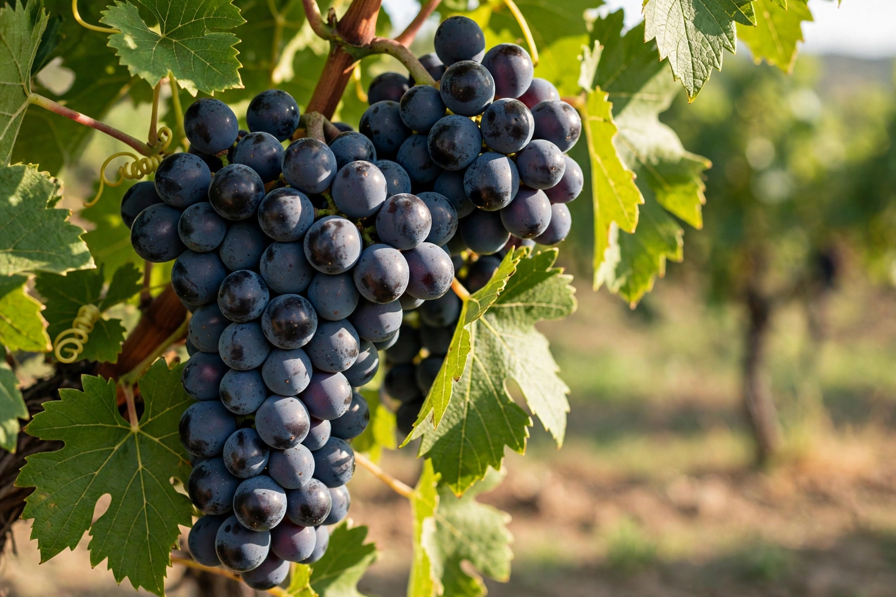

Cabernet Sauvignon is one of the world's most widely recognised red wine grape varieties, grown in nearly every major wine-producing country. It produces full-bodied, tannic wines capable of long ageing.

DNA profiling in 1997 showed Cabernet Sauvignon arose from a natural crossing of Cabernet Franc and Sauvignon blanc in 17th-century south-west France. Thick skins made it resistant to rot and easy to grow, aiding its spread.
Late-ripening, it yields small dark berries with high tannin and acidity. Typical flavours include blackcurrant/cassis, black cherry, cedar, tobacco and, in cooler climates, green bell pepper from pyrazines. It is the dominant grape of Bordeaux's Left Bank blends with Merlot and Cabernet Franc, and of many Napa Valley wines. In the 1976 Judgment of Paris, California Cabernet-based wines famously outscored Bordeaux.
Merlot, Bordeaux wine, Carménère (long confused with it in Chile).